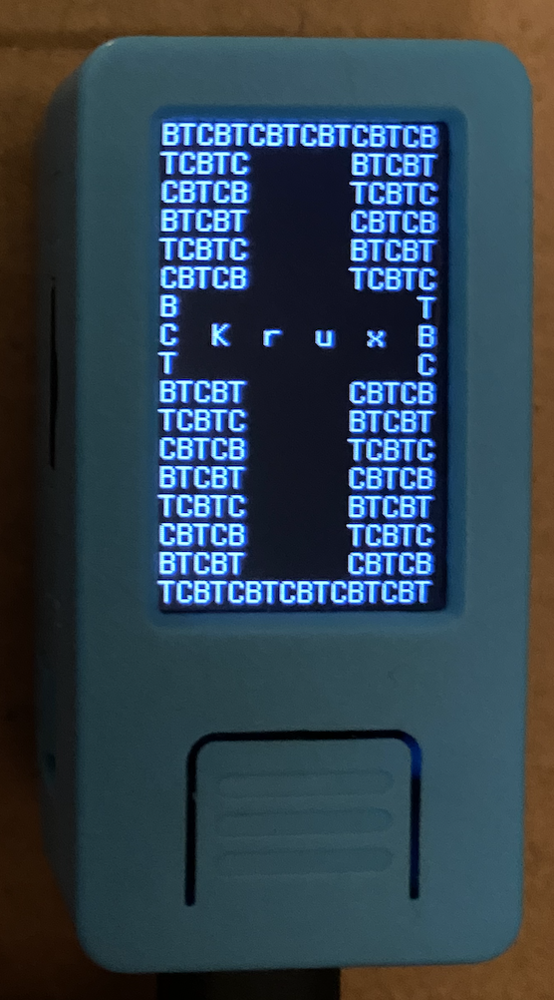

Installing
For now, Krux must be built from source. In the future, we will make PGP-signed releases available for download.
Requirements¶
Hardware¶
You will need the M5StickV, a supported microSD card, a USB-C cable, and a computer with a USB port to continue. Consult the part list for more information.
Software¶
You will need a computer with git and vagrant installed.
Fetch the code¶
In a terminal, run the following:
git clone --recurse-submodules https://github.com/jreesun/krux
krux folder.
Note: When you wish to pull down updates to this repo, you can run the following inside the krux folder:
git pull --recurse-submodules
Spin up a virtual machine¶
After you have installed Vagrant, run the following inside the krux folder to spin up a new VM:
vagrant up
Build the firmware inside the VM¶
Run the following:
vagrant ssh -c 'cd /vagrant; ./krux build-firmware'
Flash the firmware onto the M5StickV¶
Connect the M5StickV to your computer via USB, power it on (left-side button), and run the following:
vagrant reload && vagrant ssh -c 'cd /vagrant; ./krux flash-firmware'
vagrant reload is necessary in order for the newly-inserted USB device to be detected and passed through to the VM on startup.
If this command fails with the error Failed to find device via USB. Is it connected and powered on?, make sure that your user has been added to the vboxusers group. On Mac or Linux, run the following command:
sudo usermod -a -G vboxusers <user>
If the flashing process fails midway through, check the connection, restart the device, and try the command again.
If everything worked, when the device reboots you should see... a black screen!
Build the software¶
To build the software, run the following:
vagrant ssh -c 'cd /vagrant; ./krux build-software en-US'
Prefer a different language? You can replace en-US in the command above with one of the following supported locales:
- de-DE (German)
- es-MX (Spanish)
- fr-FR (French)
- Are we missing one? Make a PR!
Note that due to memory constraints of the device, the translations for the language you wish to use must be baked into the software at this step and can't be changed at runtime.
Flash the software onto the microSD card¶
Plug the microSD card into your computer and make sure to format it as FAT-32. After mounting the card, take note of its path on your computer, for example on a Mac it might be located at /Volumes/SD.
You can either manually copy over the contents of the build directory (not the folder itself) onto the root of the card, or run the following to do it for you:
./krux flash-software /Volumes/SD
Boot it up¶
Unmount and remove the microSD card from your machine, insert it into the M5StickV, and long-press its power button (left side) to boot it up. You should soon see the Krux logo appear on the screen.

If after 30 seconds you still see a black screen, try power cycling the device by holding down the power button for six seconds.
Congrats, you're now running Krux!